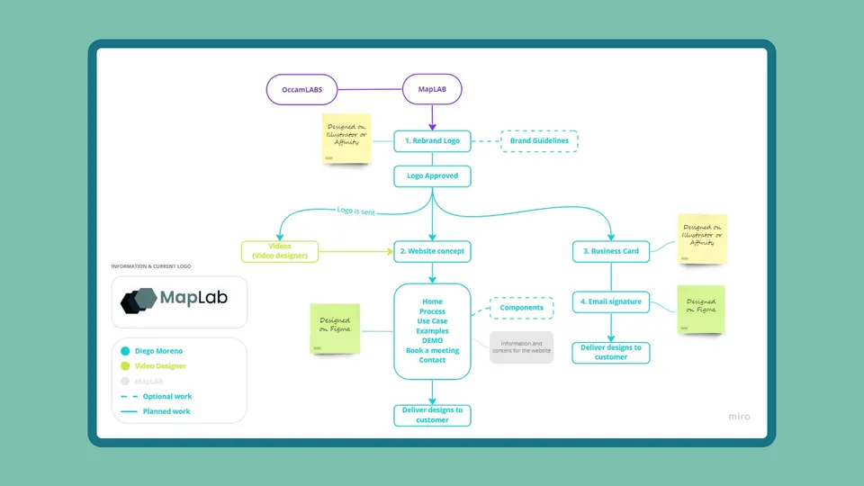

07 — Branding · Web
MapLab.world
MapLab.world convierte datos de ubicación en mapas interactivos y estratégicos. Necesitaba una marca y una web tan claras y técnicas como la propia plataforma.

Resumen
MapLab.world es una plataforma de geoanálisis que ayuda a los equipos a entender el mundo a través de los datos y a verlo como mapas interactivos. Necesitaba una identidad más afilada y una web que explicara con claridad un producto técnico.
Rediseñé el logotipo y construí la identidad a su alrededor —paleta, tipografía, guías del brand book y papelería— y después diseñé la web de marketing.
Reto
- 01El logotipo existente necesitaba un rebranding que luciera nítido tanto sobre interfaces de mapas oscuras como en impresión.
- 02Una plataforma de datos debía sentirse precisa y cercana a la vez, con una paleta y una tipografía que funcionaran sobre superficies oscuras y claras.
- 03La web tenía que explicar un producto complejo —visualizar, explorar y conectar datos— en unas pocas secciones claras.
- 04Logotipo, guías, papelería y web debían mantenerse unidos como un único sistema coherente.
Proceso
Mapeé el proyecto en Miro antes de diseñar: primero el rebranding del logotipo, después el concepto de la web en Figma, la tarjeta de visita y la firma de email, con las brand guidelines en paralelo. Un diseñador de vídeo trabajó en los vídeos a la vez.



Solución
Una nueva marca hexagonal y un logotipo tipográfico, una paleta de dark gunmetal, blue sapphire y green sheen con tipografía Clash Grotesk, un brand book, papelería a juego y un concepto de web que presenta la plataforma en secciones claras y enfocadas.
De un vistazo